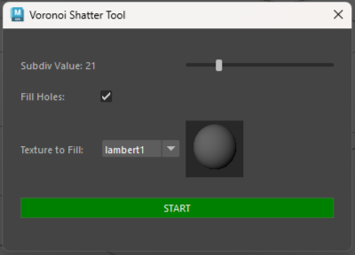

Voronoi Shatter Tool
Info
- This tool was also created for a group project, the same one I made the original Shatter tool for, I wanted to offer an alternative that is even faster to use, since this tool is automatic it requires little input from 3D artist so they can focus on other assets.
- First move the slider to choose in how many pieces you want to cut the asset in, you can choose to fill the created holes or not, if you choose to fill them you can put a specific texture, then click start and wait for it to finish.
- This was made following a tutorial from oceanqiu.

The code
Uses PythonQt to make the UI, I made the UI myself and followed a tutorial for the Voronoi math. It creates copies of the asset and cut each with the cut tool automatically.You can find the source code on my GitHub